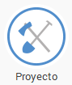

Conviértete en un Mensajero de la Paz
1
Crea tu Registro para Mensajeros de la Paz | ir a la página de registro |
Y así, sin más preámbulos, ya formás parte de la Red Mundial de Mensajeros... podrás subir tus proyectos, unirte o crear comunidades y mantenerte en contacto con otros Scouts que forman parte de esta iniciativa.
2
Evalua las Necesidades que presente la comunidad, para esto es necesario el contacto directo con miembros activos de la misma.
Decide lo que Tú y sus compañeros Scouts pueden hacer para ayudar. Es importante que estés claro sobre el Área del Proyecto que desea realizar, éstas son: Medio Ambiente, Social, Salud, Servicio, Resolución de Conflictos y Promoción del diálogo... ver mas
Cualquier duda o inquietud convérsala con el Cooperador Regional de Mensajeros de la Paz, quien está para apoyarte.
3
Una vez seleccionada la necesidad y el área donde se encuentra ubicada, realiza una Toma de Conciencia y Respuesta a estas Necesidad, lo cual busca dar a la comunidad las herramientas para ayudar a disminuir la problemática presentada. Realizada esta fase, juntos a la comunidad, se deberá definir un proyecto a trabajar y el plan de acción para su ejecución.
4
Luego de tener el proyecto seleccionado, se debe realizar la Toma de Acción, en la cual se debe ejecutar el proyecto entre los embajadores de paz y la comunidad a beneficiarse.
5
Ahora ve a la página de los Mensajeros, ingresa con tu usuario, sube tu Proyecto y declara tu intención de cambiar el Mundo! | Ir a la página de mensajeros |
Es muy sencillo y luego de llenar el formulario y enviarlo, se colocará un pin o marca en el Mapamundi de proyectos de Mensajero de la Paz, para que todos puedan ver que han realizado.
Te invitamos a que por favor seas cuidadoso en detallar la descripción de tu proyecto, debido que este se visualizará en el Mundo entero. Puedes adjuntar documentos, fotos, vídeos o cualquier archivo que desees para ilustrar tu publicación.
6
Finalizado el reporte en www.scout.org, informa a los Cooperadores Nacionales a través de un formulario en línea | Ir al formulario |
Responde cada una de las preguntas que van apareciendo en el formato, una vez concluido, ya tiene reportado tu Proyecto de Mensajeros de la Paz.
Hecho esto, ya el resto es responsabilidad del Cooperador Distrital o Regional, quien verifica la información y dar el visto bueno a los proyectos, así mismo los Cooperadores Nacionales son los encargados de generar el o los certificado(s) de Mensajeros de la Paz por cada uno de los participantes en cada proyectos.
7
Ten en cuenta tu compromiso y recuerda a tus amigos Scouts que pueden ayudar a completarlo! Por lo tanto, los invitamos a inscribirse para Mensajero de la Paz.